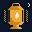

The Night Bite
Pick your water
Live levels, tonight’s bite, ramps and the rules after dark for Ohio waters. Pick yours and it opens first next time.
Last picked
No waters by that name yet
Central Ohio
- Hoover ReservoirLive level and temp
- Alum Creek LakeLive level
- Buckeye LakeLive level
- O'Shaughnessy ReservoirLive level
- Griggs ReservoirLive level and temp
- Indian LakeWest central OhioLive level and temp
- Delaware LakeLive level
- Deer Creek LakeLive level
- Madison LakeNo public gauge
- Knox LakeNo public gauge
- Clear Fork ReservoirNo public gauge
East and Southeast Ohio
Northeast Ohio

Get the app
Add The Night Bite to your home screen. It opens full screen with the lantern icon, and the pages you’ve opened still work with no signal.
You’re using the app. Pages you’ve opened still work with no signal.
iPhone
- In Safari, tap Share.
- Tap “Add to Home Screen”. Scroll the menu if you don’t see it.
- Tap Add.
On newer iOS, Chrome’s Share menu has it too.
Android
- In Chrome, tap the menu .
- Tap “Install app” or “Add to Home screen”.
- Or tap the Install button when it shows.
What this site is
- Unofficial Ohio night fishing hub with night-dock atmosphere, one home page per water
- Species pages with limit reminders from the ODNR 2026–27 rules
- One example log entry, marked Example · not ODNR / City / USGS
Night fishing can be dangerous in storms, heat, and low visibility. Wear a life jacket when it calls for it. Each water’s page has its own boat limits and rules. See About.